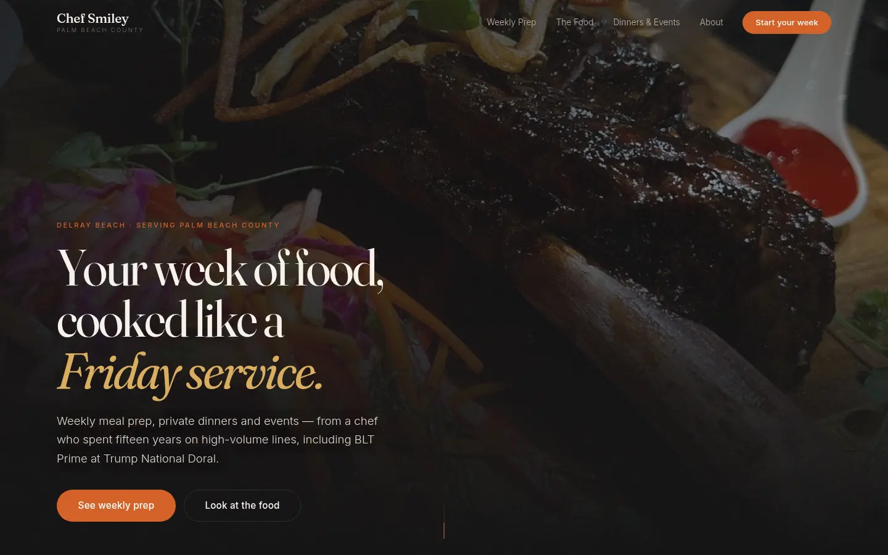
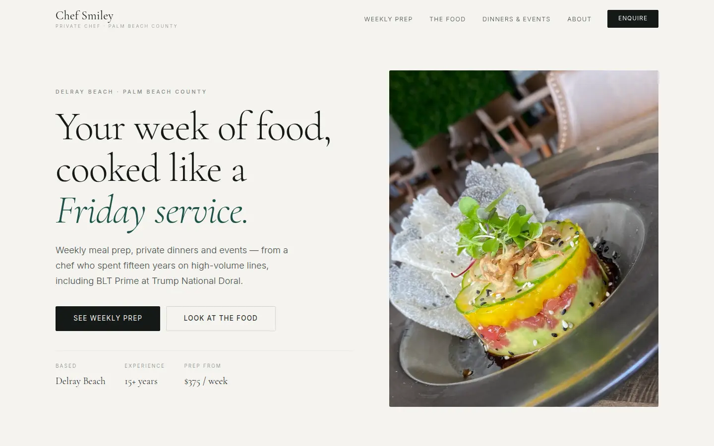

Chef Smiley · Two directions
Both are complete and working — real photography, real video, the weekly-prep plans, the qualifying enquiry form, all of it. The only thing that differs is the design. Open both, then tell me which one to keep.
Before this goes live: every price shown is a placeholder based on
Palm Beach market rates, not a quote from you. They all live in one file
(assets/site-data.js) and take two minutes to change.

Direction A
Near-black, full-bleed video, warm ember and gold. Feels like an expensive steakhouse. Your food is lit dark and shot in working kitchens, so this hides the stainless and makes the plates glow.
Open Direction A →
Direction B
Cool bone, editorial grid, fine serif, deep Atlantic green. Reads Palm Beach rather than steakhouse — quieter, more expensive-feeling to an older, wealthier household. The staggered gallery looks like a magazine spread.
Open Direction B →